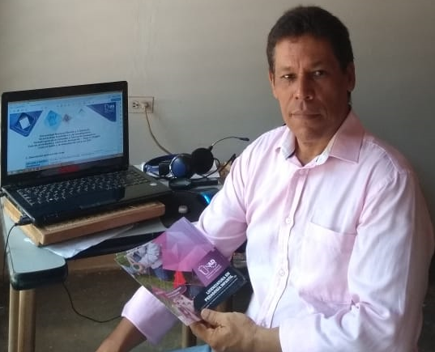

Web Etiquetas Básicas de HTML5, Atributos y Valores
Universidad Nacional Abierta y a Distancia - UNAD
Escuela de Ciencias Básicas, Tecnología e Ingeniería
Curso: Diseño de Sitios Web - 301122
Grupo: 35
Fase 3 Diseño y Construcción II

Juan Carlos del C Díaz Flórez - código 79044143
Skype: JUAN DIAZ FLOREZ Contáctenos: jcdiazf@unadvirtual.edu.co
 Web Etiquetas Básicas de HTML5, Atributos y Valores
Web Etiquetas Básicas de HTML5, Atributos y Valores